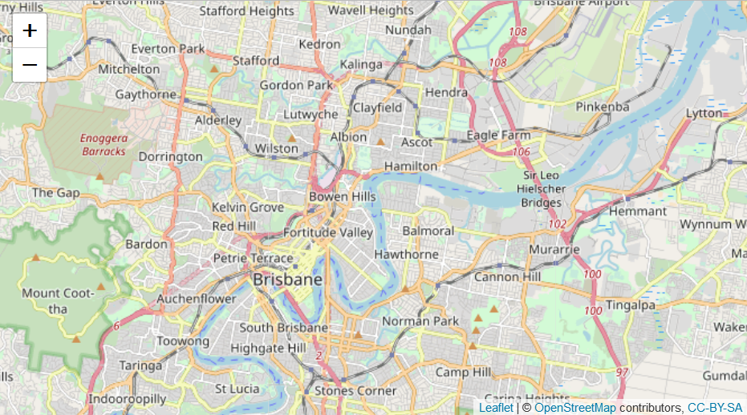
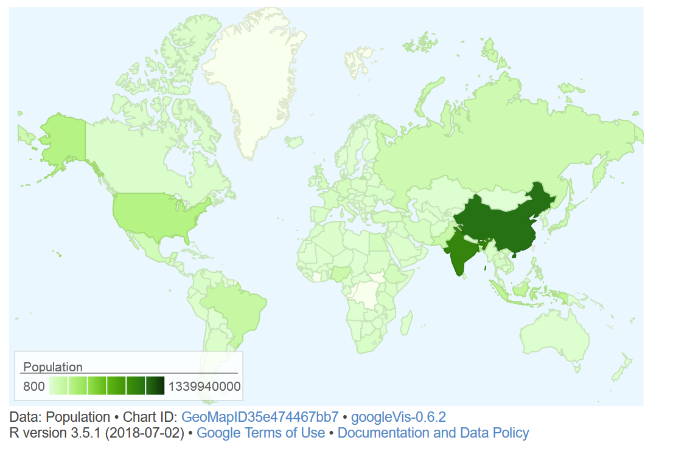
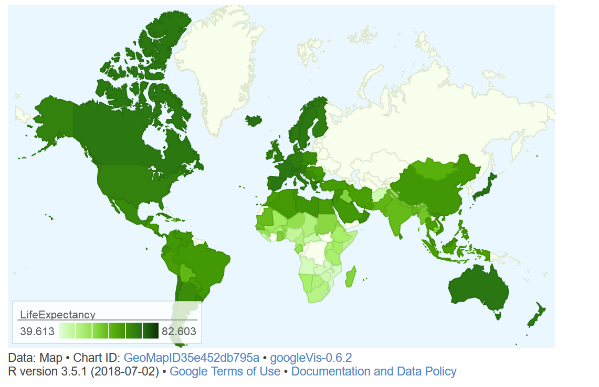

Displaying Geo-Spatial Data with R
Martin Schweinberger
2020-09-25

Introduction
This tutorial introduces geo-spatial data visualization in R. The entire R markdown document for this tutorial can be downloaded here.
This tutorial is based on R. If you have not installed R or are new to it, you will find an introduction to and more information how to use R here. For this tutorials, we need to install certain packages from an R library so that the scripts shown below are executed without errors. Before turning to the code below, please install the packages by running the code below this paragraph. If you have already installed the packages mentioned below, then you can skip ahead ignore this section. To install the necessary packages, simply run the following code - it may take some time (between 1 and 5 minutes to install all of the libraries so you do not need to worry if it takes some time).
# clean current workspace
rm(list=ls(all=T))
# set options
options(stringsAsFactors = F) # no automatic data transformation
options("scipen" = 100, "digits" = 4) # suppress math annotation
# install libraries
install.packages(c("RgoogleMaps", "ggmap", "mapproj", "sf",
"dplyr", "OpenStreetMap", "devtools"))
# install package from github
devtools::install_github("dkahle/ggmap", ref = "tidyup")Depending on the maps that are used in the visualization, it may also be necessary to access other data bases. One very useful data base for maps is, of course, Google Maps. However, to access Google Maps materials, installation and setting up other pieces of software is necessary. How to get access to Google’s data is discussed below. In the following section, methods that do not require installation of software other than R.
1 Getting started with maps
The most basic way to display geospatial data is to simply download and display a map. In order to do that, we load the libraries neccessary for extracting and plotting the map, before we can go ahead and actually extracting and plotting the map.
The package “OpenStreetMap” offers a range of maps with different features. To access the OpenStreetMap data base, it is necessary to install the package. Once the package is installed, we can simply extract the map and define the region we want to plot by defining the longitude and latitude of the upper left and lower right corner of the region we want to display. The argument “minNumTiles” defines the accuracy of the map, the higher the number of tiles, the higher the resolution. The type of map is defined by the “type” argument. The type argument defines from which server the map is extracted. Once we have extracted a map, we can plot it using the “plot” function.
# load library
library(OpenStreetMap)
# extract map
AustraliaMap <- openmap(c(-8,110),
c(-45,160),
# type = "osm",
# type = "esri",
type = "nps",
minNumTiles=7)
# plot map
plot(AustraliaMap)
In order to obtain different map types, we change the “type” argument. The following options are available for type: “osm”, “osm-bw”,“maptoolkit-topo”, “waze”, “bing”, “stamen-toner”, “stamen-terrain”, “stamen-watercolor”, “osm-german”, “osm-wanderreitkarte”, “mapbox”, “esri”, “esri-topo”, “nps”, “apple-iphoto”, “skobbler”, “hillshade”, “opencyclemap”, “osm-transport”, “osm-public-transport”, “osm-bbike”, “osm-bbike-german”. Unfortunately, not all options work. If they do not work, then an error message is shown telling us that the number of tiles is not supported.
We can zoom in or out by either changing the “zoom” or the “minNumTiles” arguments - in both cases, the higher the number, the more fine-grained the dispalyed map. Let’s check out some examples for maps of Queensland.
# extract map
queensland1 <- openmap(c(-8,135),
c(-30,160),
type = "osm",
minNumTiles=6)
queensland2 <- openmap(c(-8,135),
c(-30,160),
type = "esri",
minNumTiles=6)
# plot maps
par(mfrow = c(1, 2)) # display plots in 1 row/2 columns
plot(queensland1); plot(queensland2); par(mfrow = c(1, 1)) # restore original settings
The “leaflet” function from the “leaflet” package creates a Leaflet map widget using html-widgets. The widget can be rendered on HTML pages generated from R Markdown, Shiny, or other applications. The advantage in using this function lies in the fact that it offers very detailed maps which enable zooming in to very specific locations.
# load library
library(leaflet)
# load library
m <- leaflet() %>% setView(lng = 153.05, lat = -27.45, zoom = 12)
# display map
m %>% addTiles()
Another data base that is very useful when certaing maps is the “rworldmap” package. The “worldmap” package contains the shape files for countries but also more fine grained-shape files that display the states of selected countries. The most basic data, however, simply represents the shapes of the countries in the world.
Using the “worldmap” package has the advantage that one is not dependent on third parties and their servers but can operate within “R” wihtout being denyed access due to e.g. copy right issues or server maintenance.
# load library
library(rworldmap)
# get map
worldmap <- getMap(resolution = "coarse")
# plot worldmap
plot(worldmap, col = "lightgrey",
fill = T, border = "darkgray",
xlim = c(-180, 180), ylim = c(-90, 90),
bg = "aliceblue",
asp = 1, wrap=c(-180,180))
The basic map shown above can then be modified and enriched with color coding to convey geospatial data. The following shows how to customize the world map.
# load library
library(maps)
# plot maps
par(mfrow = c(1, 2)) # display plots in 1 row/3 columns
# show map with Latitude 200 as center
map('world', xlim = c(100, 300))
# add axes
map.axes()
# show filled map with Latitude 200 as center
ww2 <- map('world', wrap=c(0,360), plot=FALSE, fill=TRUE)
map(ww2, xlim = c(100, 300), fill=TRUE)
par(mfrow = c(1, 1)) # restore original settings2 Customizing Maps
Displaying basic maps is usually less interesting because, typically, we want to add different layers to a map. In order to add layers to a map, we need to have a shape file, i.e. a file which contains information about borders or locations that can then be displayed in different colors. In other words, we need to have a shape object to add information to the map.
We load the “airports” data set which contains the longitude and latitude of airports across the world.
# load data
airports <- read.delim("https://slcladal.github.io/data/airports.txt",
sep = "\t", header = T)
# inspect data
head(airports)## ID Name City Country
## 1 1 Goroka Airport Goroka Papua New Guinea
## 2 2 Madang Airport Madang Papua New Guinea
## 3 3 Mount Hagen Kagamuga Airport Mount Hagen Papua New Guinea
## 4 4 Nadzab Airport Nadzab Papua New Guinea
## 5 5 Port Moresby Jacksons International Airport Port Moresby Papua New Guinea
## 6 6 Wewak International Airport Wewak Papua New Guinea
## Latitude Longitude
## 1 -6.081690 145.392
## 2 -5.207080 145.789
## 3 -5.826790 144.296
## 4 -6.569803 146.726
## 5 -9.443380 147.220
## 6 -3.583830 143.669To display the locations of airports on a map, we first plot the map and then add a layer of points to indicate the location of airports. In addition, the “plot” functions offers various arguments for customizing the display, e.g. by changing the backgroundcolor (bg), defining the color of borders (borders), defining the color of the shapes (fill and col).
# plot data on world map
plot(worldmap, xlim = c(-80, 160), ylim = c(-50, 100),
asp = 1, bg = "lightblue", col = "black", fill = T)
# add points
points(airports$Longitude, airports$Latitude,
col = "red", cex = .01)
It is, of course, also possible to highlight individual countries.
# create data frame with iso3 country codes and number of visits
countriesvisited <- data.frame(country = c("AUS", "JPN", "FIN",
"CZE", "POL", "AUT",
"USA", "GBR", "IRL",
"DEU", "DNK", "FRA",
"NDL", "BEL", "ESP",
"HRV", "SVN", "NOR",
"ITA", "HUN", "ROU",
"BGR", "GRC", "TUR",
"CHE", "ARE"),
visited = c(5, 1, 2, 1, 1, 3, 4, 4, 5, 11, 1, 1, 2, 2, 4, 4,
1, 1, 3, 1, 1, 2, 1, 1, 3, 2))
# inspect data
head(countriesvisited)## country visited
## 1 AUS 5
## 2 JPN 1
## 3 FIN 2
## 4 CZE 1
## 5 POL 1
## 6 AUT 3# combine data frame with map
visitedMap <- joinCountryData2Map(countriesvisited,
joinCode = "ISO3",
nameJoinColumn = "country")## 25 codes from your data successfully matched countries in the map
## 1 codes from your data failed to match with a country code in the map
## 218 codes from the map weren't represented in your data# def. map parameters, e.g. def. colors
mapParams <- mapCountryData(visitedMap,
nameColumnToPlot="visited",
oceanCol = "azure2",
catMethod = "categorical",
missingCountryCol = gray(.8),
colourPalette = c("coral",
"coral2",
"coral3", "orangered",
"orangered3", "orangered4"),
addLegend = F,
mapTitle = "",
border = NA)
# add legend and display map
do.call(addMapLegendBoxes, c(mapParams,
x = 'bottom',
title = "No. of visits",
horiz = TRUE,
bg = "transparent",
bty = "n"))
It is, of course also possible to show only a part of the map by defining the x- and y-axes limits of the plot window.
# get map
newmap <- getMap(resolution = "low")
# plot map
plot(newmap, xlim = c(-20, 59), ylim = c(35, 71),
asp = 1, fill = T, border = "darkgray",
col = "wheat2", bg = "gray95")
# add points
points(airports$Longitude, airports$Latitude, col = "red", cex = .5, pch = 20)
This is of course also possible to show Australian airports.
# plot data on world map
plot(worldmap, xlim = c(110, 160), ylim = c(-45, -10),
asp = 1, bg = "azure2", border = "lightgrey", col = "wheat1",
fill = T, wrap=c(-180,180))
points(airports$Longitude, airports$Latitude,
col = "darkblue", cex = .5, pch = 20)
In addition to the location of airports, it is also possible to show how many flights arrive at an airport. As this information is not provided in the airport data, we load the routes data which contains information about the routes that airlines fly.
# read in routes data
routes <- read.delim("https://slcladal.github.io/data/routes.txt",
sep = "\t", header=T)
# inspect first 6 lines of routes data
head(routes)## airline airlineID sourceAirport sourceAirportID destinationAirport
## 1 2B 410 AER 2965 KZN
## 2 2B 410 ASF 2966 KZN
## 3 2B 410 ASF 2966 MRV
## 4 2B 410 CEK 2968 KZN
## 5 2B 410 CEK 2968 OVB
## 6 2B 410 DME 4029 KZN
## destinationAirportID
## 1 2990
## 2 2990
## 3 2962
## 4 2990
## 5 4078
## 6 2990To show the number of arrivals at an airport (only in terms of how mayn routes end at that airport), we extract the number of routes that end in each airport.
# load library
library(plyr)
# extract number of arrivals
arrivals <- ddply(routes, .(destinationAirportID), "nrow")
names(arrivals)[2] <- "flights"
# inspect data
head(arrivals)## destinationAirportID flights
## 1 \\N 221
## 2 1 5
## 3 10 2
## 4 100 44
## 5 1001 4
## 6 1004 7We can now merge the airports and the arrival data set to combine the information about the location with the information about the number of routes that end at each airport.
# create arrival table
airportA <- merge(airports, arrivals, by.x = "ID", by.y = "destinationAirportID")
# inspect arrival table
head(airportA)## ID Name City Country
## 1 1 Goroka Airport Goroka Papua New Guinea
## 2 2 Madang Airport Madang Papua New Guinea
## 3 3 Mount Hagen Kagamuga Airport Mount Hagen Papua New Guinea
## 4 4 Nadzab Airport Nadzab Papua New Guinea
## 5 5 Port Moresby Jacksons International Airport Port Moresby Papua New Guinea
## 6 6 Wewak International Airport Wewak Papua New Guinea
## Latitude Longitude flights
## 1 -6.081690 145.392 5
## 2 -5.207080 145.789 8
## 3 -5.826790 144.296 12
## 4 -6.569803 146.726 11
## 5 -9.443380 147.220 50
## 6 -3.583830 143.669 6This table allows us to plot not only the location of airports but also the number of routes that end there.
# get map
australia <- getMap(resolution = "low")
# plot data on world map
plot(australia, xlim = c(110, 160), ylim = c(-45, -10),
asp = 1, bg = "azure1", border = "darkgrey",
col = "wheat2", fill = T)
# add points
points(airportA$Longitude, airportA$Latitude,
# define colors as transparent
col = rgb(red = 0, green = 0, blue = 1, alpha = 0.3),
# define size as number of flights div. by 50
cex = airportA$flights/50, pch = 20)
The same map can also be created using the “ggplot2” package which offers a very high degree of flexibility and allows for easy customization.
# load ggplot2 library
library(ggplot2)
# create a layer of borders
AustralianAirports <- ggplot() +
borders("world", colour=NA, fill="wheat1") +
geom_point(aes(x=airportA$Longitude, y= airportA$Latitude),
color="blue", alpha = .2, size=airportA$flights/20) +
scale_x_continuous(name="Longitude", limits=c(110, 160)) +
scale_y_continuous(name="Latitude", limits=c(-45, -10)) +
theme(panel.background = element_rect(fill = "azure1",
colour = "azure1"),
panel.grid.major = element_blank(),
panel.grid.minor = element_blank(),
axis.line=element_blank(),
axis.text.x=element_blank(),
axis.text.y=element_blank(),
axis.ticks=element_blank(),
axis.title.x=element_blank(),
axis.title.y=element_blank())
AustralianAirports
In addition, it may be useful to overlay an area with
# create map with density layer
AustralianAirportsDensity <- ggplot() +
borders("world", colour=NA, fill="antiquewhite") +
stat_density2d(aes(x = airportA$Longitude, y= airportA$Latitude,
fill = ..level.., alpha = I(.2)),
size = 1, bins = 5, data = airportA,
geom = "polygon") +
geom_point(aes(x=airportA$Longitude, y= airportA$Latitude),
color="red", alpha = .2, size=airportA$flights/20) +
geom_point(aes(x=airportA$Longitude, y= airportA$Latitude),
color="red", alpha = .2, size=airportA$flights/20, pch = 1) +
# define color of density polygons
scale_fill_gradient(low = "grey50", high = "grey20") +
scale_x_continuous(name="Longitude", limits=c(110, 160)) +
scale_y_continuous(name="Latitude", limits=c(-47, -10)) +
theme(panel.background = element_rect(fill = "lightblue",
colour = "lightblue"),
panel.grid.major = element_blank(),
panel.grid.minor = element_blank(),
# surpress legend
legend.position = "none",
axis.line=element_blank(),
axis.text.x=element_blank(),
axis.text.y=element_blank(),
axis.ticks=element_blank(),
axis.title.x=element_blank(),
axis.title.y=element_blank())
AustralianAirportsDensity
# load library
library(ggmap)
# define box
sbbox <- make_bbox(lon = c(115, 155), lat = c(-12.5, -42), f = .1)
# get map
ausbg = get_map(location=sbbox, zoom=4,
# source = "google",
source = "osm",
# source = "stamen",
color = "bw",
# color = "color",
# maptype="terrain")
# maptype="terrain-background")
maptype="satellite")
# maptype="hybrid")
# maptype="toner")
# maptype="hybrid")
# maptype="terrain-labels")
# maptype="roadmap")
# create map
ausbg = ggmap(ausbg)
# display map
ausbg +
stat_density2d(data = airportA, aes(x = Longitude, y= Latitude,
fill = ..level.., alpha = I(.2)),
size = 1, bins = 5, geom = "polygon") +
geom_point(data = airportA, mapping = aes(x=Longitude, y= Latitude),
color="gray20", alpha = .2, size=airportA$flights/20) +
# define color of density polygons
scale_fill_gradient(low = "grey50", high = "grey20") +
theme(axis.line=element_blank(),
axis.text.x=element_blank(),
axis.text.y=element_blank(),
axis.ticks=element_blank(),
axis.title.x=element_blank(),
axis.title.y=element_blank(),
panel.background = element_rect(fill = "aliceblue",
colour = "aliceblue"),
panel.grid.major = element_blank(),
panel.grid.minor = element_blank(),
# surpress legend
legend.position = "none")
# define box
sbbox <- make_bbox(lon = c(152.8, 153.4), lat = c(-27.1, -27.7), f = .1)
# get map
brisbane = get_map(location=sbbox, zoom=10,
maptype="terrain")
# create map
brisbanemap = ggmap(brisbane)
# display map
brisbanemap +
geom_point(data = airportA, mapping = aes(x = Longitude, y = Latitude),
color = "red") +
geom_text(data = airportA,
mapping = aes(x = Longitude+0.1,
y = Latitude,
label = "Brisbane Airport"),
size = 2, color = "gray20",
fontface = "bold",
check_overlap = T) 
3 Color Coding Geospatial Information
We can also use color coding of countries to convey information about different features of countries such as their population size (or results of political elections, etc.).
We use the data provided in the “rnaturalearthdata” and “rnaturalearth” packages, which contain information about the population size of countries, to color code and thus visualize differences in population size by country.
# load libraries
library("rnaturalearth")
library("rnaturalearthdata")
# extract world data
world <- ne_countries(scale = "medium", returnclass = "sf")
# create cut off points in Population
world$pop_estC <- base::cut(world$pop_est,
breaks = c(0, 500000, 1000000, 10000000,
100000000, 200000000, 500000000,
10000000000),
labels = 1:7, right = F, ordered_result = T)
# load library
library(RColorBrewer)
# define colors
palette = colorRampPalette(brewer.pal(n=7, name='Oranges'))(7)
palette = c("white", palette)
# create map
worldpopmap <- ggplot() +
geom_sf(data = world, aes(fill = pop_estC)) +
scale_fill_manual(values = palette) +
# customize legend title
labs(fill = "Population Size") +
theme(panel.grid.major = element_blank(),
panel.grid.minor = element_blank(),
# surpress legend
legend.position = "none")
# display map
worldpopmap
# start plot
ggplot(data = world) +
geom_sf(aes(fill = pop_est)) +
scale_fill_viridis_c(option = "plasma", trans = "sqrt") +
# customize legend title
labs(fill = "Population Size")
It is relatively easy to combine color coding with points. However, it is also relatively easy to color countries if all countries have values. If this is not the case (as in the example below), we need to include an additional step so that countries that are not mentioned also receive a color coding. In this example, the data contain countries and cities that I have visited along with their latitude and longitude.
# load data
visited <- read.delim("https://slcladal.github.io/data/visited.txt",
sep = "\t", header = T)
# inspect data
head(visited)## Country ISO3 City Latitude Longitude
## 1 Australia AUS Adelaide -34.9350 138.6000
## 2 Australia AUS Brisbane -27.4550 153.0351
## 3 Australia AUS Canberra -35.2830 149.1290
## 4 Australia AUS Melbourne -37.8200 144.9750
## 5 Australia AUS Sydney -33.9200 151.1852
## 6 Austria AUT Innsbruck 47.2804 11.4100After loading the data, we determine how many cities I have visited in a given country and add this frequency to the data set.
# determine how often a country was visited
ncountry <- as.data.frame(table(visited$ISO3))
colnames(ncountry)[1] <- "ISO3"
# add frequency to visited
visited <- merge(visited, ncountry, by = "ISO3")
# inspect data
head(visited)## ISO3 Country City Latitude Longitude Freq
## 1 ARE United Arab Emirates Abu Dhabi 24.4667 54.3666 2
## 2 ARE United Arab Emirates Dubai 25.2300 55.2800 2
## 3 AUS Australia Adelaide -34.9350 138.6000 5
## 4 AUS Australia Brisbane -27.4550 153.0351 5
## 5 AUS Australia Canberra -35.2830 149.1290 5
## 6 AUS Australia Melbourne -37.8200 144.9750 5The next part is tricky as we do not only need to determine the color for the countries I have visited but also the color for those that I have not visited. In order to do that, we load the data set that underlies the world map that will be displayed.
# load library
library(maptools)
# load world data for plotting
data(wrld_simpl)
# def. color (bias for contrast)
pal <- colorRampPalette(brewer.pal(6, 'Greens'),
bias = 10)(length(visited$Freq))
pal <- pal[with(visited, findInterval(Freq, sort(unique(Freq))))]
# define color for countries not in visited
countrycolor <- rep("white", length(wrld_simpl@data$NAME))
# define colors for countries in visited
countrycolor[match(visited$Country, wrld_simpl@data$NAME)] <- palAfter assigning colors to all countries, we can proceed by plotting the color coded map along with points for the locations of the cities I have visited.
# plot map
plot(wrld_simpl, ylim=c(-40, 85), xlim = c(-180, 180),
mar=c(0,0,0,0), bg="gray40", border = NA,
col=countrycolor)
# add points
points(visited$Longitude, visited$Latitude, col="red", pch=20, cex = .5)
A slightly more elegent way to achive the same goal is to plot the information using the “ggplot2” package.
# use the contry name instead of 3-letter ISO as id
wrld_simpl@data$id <- wrld_simpl@data$NAME
wrld <- fortify(wrld_simpl, region="id")
# remove Antarctica from map
wrld <- subset(wrld, id != "Antarctica")
# change column names of visited
colnames(visited) <- ifelse(colnames(visited) == "Country",
"id",
colnames(visited))
# combine visited and wrld
worlddata <- join(wrld, visited, by = "id")
# change NA to 0
worlddata$Freq <- ifelse(is.na(worlddata$Freq) == T, 0, worlddata$Freq)
# convert freq into factor
worlddata$Freq <- as.factor(worlddata$Freq)
# start plotting
ggmapplot <- ggplot() +
geom_map(data=worlddata, map=worlddata,
aes(map_id=id, x=long, y=lat,
fill=Freq), color=NA, size=0.25) +
geom_point(data = visited,
aes(x = Longitude, y = Latitude),
col = "red", size = .75) +
scale_fill_manual(values=c("white", "gray80", "gray75",
"gray70", "gray65", "gray60", "gray55"),
name="No. cities visited") +
# coord_map("gilbert") + # spherical
coord_map() + # for normal Mercator projection
labs(x="", y="") +
theme(plot.background = element_rect(fill = "grey40", colour = NA),
panel.border = element_blank(),
panel.background =
element_rect(fill = "transparent", colour = NA),
panel.grid = element_blank(),
axis.text = element_blank(),
axis.ticks = element_blank(),
legend.position = "right")
ggmapplot
4 Interactive Maps
An easy way to create interactice maps is to use the “googleVis” package. An example showing the population size by country provided by an in-built data set is shown.
# load library
library(googleVis)
# create motion chart object
Geo=gvisGeoMap(Population, locationvar="Country", numvar="Population",
options = list(height=350, daatMode='regions'))
# display motion chart
plot(Geo)A browser window should open and and if you accept and execute Adobe Flash, then the following interactive map showing the population size by country should pop up. You can hoover over any country and see its population size.

You can also use the “googleVis” package to create customized maps. To customize an interactive map, we need to load a data set.
# load data
gapminderdata <- read.delim("https://slcladal.github.io/data/gapminder.txt",
header = T, sep = "\t")
# create map
Map <- data.frame(gapminderdata$country,
gapminderdata$year, gapminderdata$lifeExp)
# def. column names
names(Map) <- c("Country", "Year", "LifeExpectancy")
# inspect data
head(Map)## Country Year LifeExpectancy
## 1 Afghanistan 1952 28.801
## 2 Afghanistan 1957 30.332
## 3 Afghanistan 1962 31.997
## 4 Afghanistan 1967 34.020
## 5 Afghanistan 1972 36.088
## 6 Afghanistan 1977 38.438We will only use the latest data (from 2007) and exclude all other data points and create the interactive map as we did above.

5 Creating Maps with tmap and Shape Files
When creating more sophisticated maps, it is common to use shape files. Shape files define the edges of polygons and can be very complex depending on the number of edges of a polygon.
# load libraries
library(sf)
library(tmap)
# load shape file
ausstates <- sf::st_read("D:\\Uni\\UQ\\SLC\\LADAL\\SLCLADAL.github.io\\data\\shapes/AshmoreAndCartierIslands.shp", stringsAsFactors = F)## Reading layer `AshmoreAndCartierIslands' from data source `D:\Uni\UQ\SLC\LADAL\SLCLADAL.github.io\data\shapes\AshmoreAndCartierIslands.shp' using driver `ESRI Shapefile'
## Simple feature collection with 15 features and 14 fields
## geometry type: MULTIPOLYGON
## dimension: XY
## bbox: xmin: 72.57811 ymin: -54.77708 xmax: 167.9966 ymax: -9.140693
## geographic CRS: WGS 84# plot australian admin shape file
tm_shape(ausstates) +
tm_fill() +
tm_borders()
# load library
library(rgdal)
# load shape files
ausstates <- readOGR(dsn = "D:\\Uni\\UQ\\SLC\\LADAL\\SLCLADAL.github.io\\data\\shapes/AshmoreAndCartierIslands.shp", stringsAsFactors = F)## OGR data source with driver: ESRI Shapefile
## Source: "D:\Uni\UQ\SLC\LADAL\SLCLADAL.github.io\data\shapes\AshmoreAndCartierIslands.shp", layer: "AshmoreAndCartierIslands"
## with 15 features
## It has 14 fieldsausstatesadmin <- readOGR(dsn = "D:\\Uni\\UQ\\SLC\\LADAL\\SLCLADAL.github.io\\data\\shapes/Australia_admin_6.shp", stringsAsFactors = F)## OGR data source with driver: ESRI Shapefile
## Source: "D:\Uni\UQ\SLC\LADAL\SLCLADAL.github.io\data\shapes\Australia_admin_6.shp", layer: "Australia_admin_6"
## with 252 features
## It has 68 fields
## Integer64 fields read as strings: z_order# plot australia and queensland
ozmap <- ggplot() +
geom_polygon(data = ausstates,
aes(x = long, y = lat, group = group),
colour = "black", fill = NA) +
geom_polygon(data = ausstatesadmin,
aes(x = long, y = lat, group = group),
colour = "red", fill = NA) +
theme_void()
# plot map
ozmap
# inspect shape file
summary(ausstates@data)## id country name enname
## Min. : 82636 Length:15 Length:15 Length:15
## 1st Qu.:2316594 Class :character Class :character Class :character
## Median :2316598 Mode :character Mode :character Mode :character
## Mean :2251865
## 3rd Qu.:2363491
## Max. :3225677
## locname offname boundary adminlevel
## Length:15 Length:15 Length:15 Min. :4
## Class :character Class :character Class :character 1st Qu.:4
## Mode :character Mode :character Mode :character Median :4
## Mean :4
## 3rd Qu.:4
## Max. :4
## wikidata wikimedia timestamp note
## Length:15 Length:15 Length:15 Length:15
## Class :character Class :character Class :character Class :character
## Mode :character Mode :character Mode :character Mode :character
##
##
##
## rpath ISO3166_2
## Length:15 Length:15
## Class :character Class :character
## Mode :character Mode :character
##
##
## table(ausstates@data$name)##
## Ashmore and Cartier Islands Australian Capital Territory
## 1 1
## Christmas Island Cocos (Keeling) Islands
## 1 1
## Coral Sea Islands Territory Heard Island and McDonald Islands
## 1 1
## Jervis Bay Territory New South Wales
## 1 1
## Norfolk Island Northern Territory
## 1 1
## Queensland South Australia
## 1 1
## Tasmania Victoria
## 1 1
## Western Australia
## 1ausstates_df <- broom::tidy(ausstates, region = "name")# extract names of states
cnames <- aggregate(cbind(long, lat) ~ id, data=ausstates_df, FUN=mean)
# define colors
# Define the number of colors you want
library(RColorBrewer)
nb.cols <- 15
newcolors <- colorRampPalette(brewer.pal(8, "Oranges"))(nb.cols)
# plot australian admin shape file
ausadminmap <- ggplot() +
# plot australian state shapes
geom_polygon(data = ausstates_df,
aes(x = long, y = lat, group = group, fill = id),
asp = 1, colour = NA) +
geom_text(data = cnames, aes(x = long, y = lat, label = id),
size = 2, color = "gray20", fontface = "bold",
check_overlap = T) +
# def. manual colors
scale_fill_manual(values = newcolors) +
# use empty theme
theme_void() +
scale_x_continuous(name="Longitude", limits=c(112, 155)) +
scale_y_continuous(name="Latitude", limits=c(-45, -10)) +
# def. background color
theme(panel.background = element_rect(fill = "slategray1",
colour = "slategray1",
size = 0.5, linetype = "solid"),
legend.position = "none")
# plot map
ausadminmap
# create data frame with longitude and latitude values
Latitude <- c(-25, -27.5, -25, -30, -30, -35, -25)
Longitude <- c(150, 140, 130, 135, 140, 147.5, 150)
mypolygon <- as.data.frame(cbind(Longitude,Latitude))
# inspect data
mypolygon## Longitude Latitude
## 1 150.0 -25.0
## 2 140.0 -27.5
## 3 130.0 -25.0
## 4 135.0 -30.0
## 5 140.0 -30.0
## 6 147.5 -35.0
## 7 150.0 -25.0# plot australian admin shape file
ausadminmap <- ggplot() +
# plot state shapes
geom_polygon(data = ausstates_df,
aes(x = long, y = lat, group = group),
asp = 1,
fill = "wheat1",
colour = "wheat3") +
ggplot2::geom_text(data = cnames, aes(x = long, y = lat, label = id),
size = 2, color = "gray20",
fontface = "bold",
check_overlap = T) +
# add customized polygon
geom_polygon(data=mypolygon,aes(x=Longitude,y=Latitude),
alpha=0.5,colour="darkgray",fill="red") +
annotate("text", x = mean(Longitude),y = mean(Latitude),
label = "My Polygon Area", colour="white", size=3) +
# def. manual colors
scale_fill_manual(values = newcolors) +
# add north arrow
ggsn::north(ausstates_df, scale = .1) +
# use empty theme
theme_void() +
scale_x_continuous(name="Longitude", limits=c(112, 155)) +
scale_y_continuous(name="Latitude", limits=c(-45, -10)) +
# def. background color
theme(panel.background = element_rect(fill = "slategray1",
colour = "slategray1",
size = 0.5, linetype = "solid"))
# plot map
ausadminmap
Citation & Session Info
Schweinberger, Martin. 2020. Displaying Geo-Spatial Data with R. Brisbane: The University of Queensland. url: https://slcladal.github.io/maps.html (Version 2020.09.25).
@manual{schweinberger2020tree,
author = {Schweinberger, Martin},
title = {Displaying Geo-Spatial Data with R},
note = {https://slcladal.github.io/maps.html},
year = {2020},
organization = "The University of Queensland, Australia. School of Languages and Cultures},
address = {Brisbane},
edition = {2020/09/25}
}sessionInfo()## R version 4.0.2 (2020-06-22)
## Platform: x86_64-w64-mingw32/x64 (64-bit)
## Running under: Windows 10 x64 (build 18362)
##
## Matrix products: default
##
## locale:
## [1] LC_COLLATE=German_Germany.1252 LC_CTYPE=German_Germany.1252
## [3] LC_MONETARY=German_Germany.1252 LC_NUMERIC=C
## [5] LC_TIME=German_Germany.1252
##
## attached base packages:
## [1] stats graphics grDevices utils datasets methods base
##
## other attached packages:
## [1] rgdal_1.5-16 tmap_3.2 sf_0.9-6
## [4] maptools_1.0-2 RColorBrewer_1.1-2 rnaturalearthdata_0.1.0
## [7] rnaturalearth_0.1.0 ggmap_3.0.0 ggplot2_3.3.2
## [10] plyr_1.8.6 maps_3.3.0 rworldmap_1.3-6
## [13] sp_1.4-2 OpenStreetMap_0.3.4
##
## loaded via a namespace (and not attached):
## [1] httr_1.4.2 tidyr_1.1.2 viridisLite_0.3.0
## [4] dotCall64_1.0-0 ggsn_0.5.0 yaml_2.2.1
## [7] backports_1.1.10 pillar_1.4.6 lattice_0.20-41
## [10] glue_1.4.2 digest_0.6.25 colorspace_1.4-1
## [13] htmltools_0.5.0 XML_3.99-0.5 pkgconfig_2.0.3
## [16] broom_0.7.0 raster_3.3-13 stars_0.4-3
## [19] purrr_0.3.4 scales_1.1.1 jpeg_0.1-8.1
## [22] tibble_3.0.3 generics_0.0.2 farver_2.0.3
## [25] ellipsis_0.3.1 withr_2.3.0 leafsync_0.1.0
## [28] magrittr_1.5 crayon_1.3.4 evaluate_0.14
## [31] MASS_7.3-51.6 lwgeom_0.2-5 foreign_0.8-80
## [34] class_7.3-17 tools_4.0.2 RgoogleMaps_1.4.5.3
## [37] lifecycle_0.2.0 stringr_1.4.0 munsell_0.5.0
## [40] isoband_0.2.2 compiler_4.0.2 e1071_1.7-3
## [43] rlang_0.4.7 tmaptools_3.1 classInt_0.4-3
## [46] units_0.6-7 grid_4.0.2 dichromat_2.0-0
## [49] rjson_0.2.20 htmlwidgets_1.5.1 spam_2.5-1
## [52] crosstalk_1.1.0.1 base64enc_0.1-3 leafem_0.1.3
## [55] bitops_1.0-6 labeling_0.3 rmarkdown_2.3
## [58] gtable_0.3.0 codetools_0.2-16 abind_1.4-5
## [61] DBI_1.1.0 curl_4.3 R6_2.4.1
## [64] knitr_1.30 dplyr_1.0.2 rgeos_0.5-5
## [67] KernSmooth_2.23-17 rJava_0.9-13 stringi_1.5.3
## [70] parallel_4.0.2 Rcpp_1.0.5 fields_11.4
## [73] vctrs_0.3.4 mapproj_1.2.7 png_0.1-7
## [76] leaflet_2.0.3 tidyselect_1.1.0 xfun_0.16